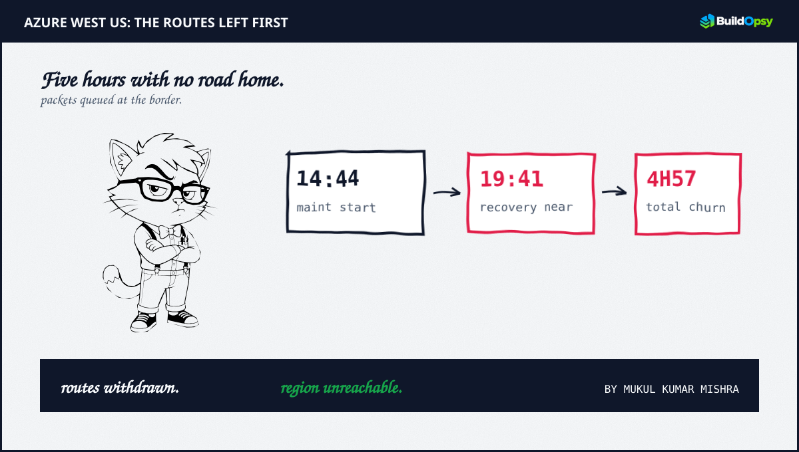
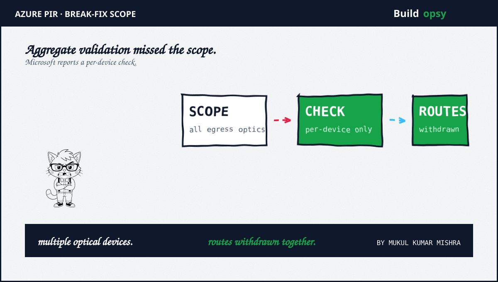

1. The Break-Fix Scope Expanded Beyond the Request
Microsoft's PIR says Azure datacenters use redundant network paths. A break-fix repair on an optical device normally begins by creating machine-readable instructions, checking that a redundant path remains available, and running safety validation.
On July 23, 2026, a defect in the blast-radius analysis system expanded a repair request to include all optical devices egressing a specific West US datacenter. The validation checked devices individually instead of assessing the aggregate effect of isolating them together, and incorrectly concluded the change was safe. Routes were withdrawn from multiple devices at once, disconnecting the datacenter from the WAN.
Microsoft says the impact affected traffic entering or leaving West US. Traffic that remained entirely within the region was not affected. The issue was not that every Azure workload or all regional capacity failed; it was a network-path failure at the boundary between a datacenter and the WAN.
2. The Reported Service Impact
Microsoft's PIR lists App Service, Application Gateway, Azure Kubernetes Service, Azure Cosmos DB, Azure Database for PostgreSQL, Azure Monitor, Azure Virtual WAN, VPN Gateway, Microsoft Sentinel, and other services among those affected. This is a service-impact list, not a claim that every instance or every customer was unavailable.
The report says traffic entering or leaving West US experienced connectivity failures, increased latency, or difficulty accessing hosted services. Traffic remaining within the region was unaffected. Microsoft noted that downstream impact to Microsoft 365 services was communicated separately under incident MO1437424.

3. What the Timeline Says About Recovery
| Time (UTC) | Microsoft's reported event | What it establishes |
|---|---|---|
| 14:44 | Break-fix began; earliest potential customer impact | Maintenance start, not a separately measured service outage for every customer |
| 17:19 | Engineers correlated the WAN anomaly with the break-fix activity | Cause identification |
| 17:45 | Manual rollback began | Automated rollback had not restored connectivity |
| 18:26 | Rollback restored datacenter-to-WAN connectivity | Network path restored |
| 19:41 | All affected services returned to expected levels | Customer impact mitigated |
From 14:44 to 19:41 is 4 hours 57 minutes. Network connectivity returned at 18:26, 41 minutes after manual rollback began; full service recovery followed at 19:41, 75 minutes later. The separation matters because route restoration and dependent-service recovery are different milestones.
4. What Went Wrong in the Design
Safety checks validated devices individually, not the combined maintenance scope. Microsoft's PIR says the validation was designed to confirm that a redundant path remained available, but it did not account for a request covering all egressing optical devices at one datacenter. A similar system should validate the aggregate effect of the complete proposed change before any device is isolated.
The automated rollback shared the failed path. Microsoft says its recovery system depended on the disrupted datacenter connectivity and could not restore the affected devices. Engineers had to correlate the WAN anomaly with the break-fix activity and start a manual rollback. A recovery path should not depend entirely on the network path it is meant to restore.
Physical health signals initially obscured the customer impact. The PIR says links and routing adjacencies appeared healthy, while the symptom presented as a WAN anomaly. The company later added change visibility to its standard change ledger, improved traffic monitoring, and strengthened automated rollback. These are reported actions, not a claim that every guardrail was complete at publication.
Route churn plus cell isolation plus paired-region failover is where the Kubernetes production course turns hard. Take Lesson 11 →
5. Estimate Exposure from Your Own Workload
Microsoft's PIR does not publish request rates, customer revenue, unit costs, or a financial-loss estimate for this incident, so this review does not assign one. For a service you operate, start with a labeled model: exposed requests × probability of a revenue event × contribution margin per event, then add recovery labor, service credits, and support costs using your own measured inputs.
For capacity planning, calculate available route capacity before maintenance, the fraction retained after the proposed change, and the arrival rate during failover. Keep those quantities separate from the incident's 4-hour-57-minute report window. The report gives the operational timeline, not the number of affected customer requests.
6. The Verdict
Microsoft's PIR establishes a 4-hour-57-minute incident window, a defect in break-fix blast-radius analysis, route withdrawals across multiple devices, and a failure of automated rollback when its connectivity path was disrupted. It also says in-region traffic was unaffected and lists the affected Azure products.
The report does not publish workload RPS, request loss, customer revenue, or per-region cost. The defensible design lesson is specific: validate the aggregate maintenance scope against the redundant-path invariant, and make rollback reachable when the data path is degraded.
Check the combined maintenance scope before withdrawing the routes.
Sources and Method
Incident mechanism, affected traffic scope, service list, timeline, and remediation status come from Microsoft's July 23, 2026 Post Incident Review, tracking ID ZJV6-SGG. All times are UTC. No request-rate, revenue, or dollar-loss estimate is asserted.
- Microsoft Azure Status History, July 23, 2026: Post Incident Review, Network connectivity in West US, tracking ID ZJV6-SGG
- Microsoft Learn: Azure reliability guidance and multi-region design
- Buildopsy: Cell-based control planes for near-zero blast radius
- Buildopsy: Cloudflare's 2025 outage — Bot Management feature-file failure